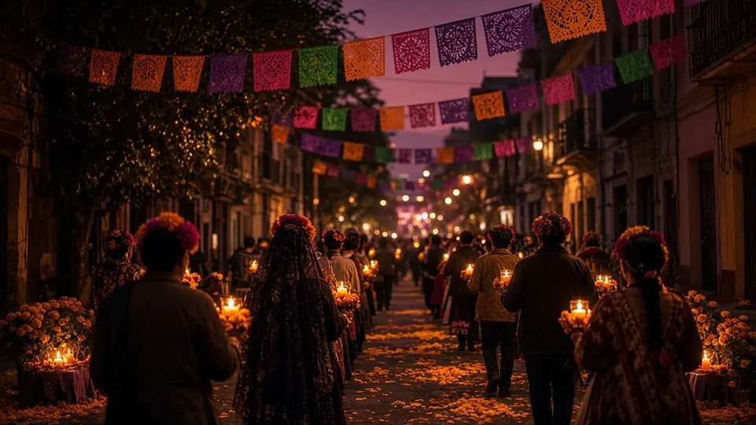

Urban Concierge Brief: SF Bay Area
Saturday Oct 31 – Monday Nov 2, 2026 · Snapshot compiled Fri Oct 30, 2026, 2:10 pm PT (Urban Concierge - Bay Area)
What's on

Sat Oct 31, noon–3 pm
Halloween Hoopla
Children's Garden, Yerba Buena Gardens (799 Howard St).
Details →

Sun Nov 1, 2 pm
SF Opera, Massenet's Manon, final performance
War Memorial Opera House, 301 Van Ness.
Details →

Mon Nov 2, 7 pm
Día de los Muertos procession
Mission District; staging from about 6 pm on Bryant between 19th and 22nd, route south on Bryant, west on 24th, north on Mission, east on 22nd…
Details →
More in this brief
Where to eat
No Yelp ratings (Yelp blocks automated loads). Descriptions from Michelin pages loaded this run. Rotated picks.
La Taqueria, Mission, SF (2889 Mission St) · Mexican · in the Michelin Guide. Michelin calls it a local favorite that "always has a queue," with Miguel Jara serving a diverse crowd. A few blocks from Monday's procession route. (415) 285-7117. https://guide.michelin.com/us/en/california/san-francisco/restaurant/la-taqueria
Flour + Water, Mission, SF (2401 Harrison St) · Italian · in the Michelin Guide. An "always-packed Mission stalwart" with affable service in a buzzy, approachable space. (415) 826-7000. https://guide.michelin.com/us/en/california/san-francisco/restaurant/flour-water
Lazy Bear, Mission, SF (3416 19th St) · Contemporary · Michelin Two Stars. A nightly tasting menu served in a bi-level warehouse decked out like a mogul's hunting lodge. (415) 874-9921. https://guide.michelin.com/us/en/california/san-francisco/restaurant/lazy-bear
State Bird Provisions, Fillmore, SF (1529 Fillmore St) · Californian · Michelin One Star. A lively staple pairing dim sum-style service with seasonal California cooking. (415) 795-1272. https://guide.michelin.com/us/en/california/san-francisco/restaurant/state-bird-provisions
Getting around
Muni and cable cars (carried): $2.85 single ride with Clipper, MuniMobile or tap-to-pay ($3.00 cash), good 120 minutes. Day pass $5.70. Cable car $9.00. Visitor Passports 1-day $15, 3-day $35, 7-day $47. Youth 18 and under ride free. https://www.sfmta.com/getting-around/muni/fares
Muni reroutes: Sat from 11 am the 33 reroutes around the Castro event, and the 24 and 35 may run late. Sun morning the 19, 28, 30 and 49 reroute for the half marathon. Mon: the 27 reroutes from 5 pm, and the 12, 14, 14R, 48, 49 and 67 from 6:45 pm until streets clear after the procession. Cortland, River of Life and Further Send Off Halloween closures are also posted. https://www.sfmta.com/travel-updates
BART:
- No live service advisories at 2:10 pm Fri.
- New: Yellow Line late-night single tracking in Contra Costa County Nov 2–6.
- Powell St. Station entrance at 4th and Market closes Nov 2–10.
- Sun–Thu nights from 9 pm, expect up to 30-minute delays between Millbrae and SFO for train control work (applies Sunday night; leave extra time for late flights).
- Coming up: reduced BART-to-OAK service the night of Nov 4 · more Yellow Line late-night single tracking Nov 12–13 · 24th St–Daly City bus bridge Nov 14–15 · Transbay Tube single tracking Nov 21.
Sources: https://www.bart.gov/schedules/advisories · https://www.bart.gov/guide/airport
Bikes and scooters (from the Oct 23 brief): Lyft Bike $1 to unlock plus $0.19/min classic or $0.49/min ebike, or a $15 day pass. Lime and Spin hold SF permits. No sidewalk riding. https://www.lyft.com/bikes/bay-wheels
SFO cars and rides (from the Oct 23 brief): Rental Car Center via AirTrain Blue Line (24 hours). Lyft and Uber pick up on Level 5 of the Domestic Garage. Taxis at the Arrivals center islands. https://www.flysfo.com/passengers/ground-transportation
Where to stay
Per SF Travel, Union Square has most major hotels and the best transit links, a short walk to SFMOMA and Yerba Buena Gardens for Saturday (note the Powell BART entrance closure from Monday). Hayes Valley and Civic Center put you by the opera for Sunday's matinee; Mission Bay is closest to Chase Center for both Warriors games; the Mission puts you on Monday's procession route but expect evening closures. Skip Marina/Van Ness-area hotels Sunday morning if you need to drive out before noon. https://www.sftravel.com/neighborhoods
Assumptions and refresh
- Public data only, from pages opened Fri Oct 30, 2026, around 2:05 pm PT (NWS forecast and alerts, Caltrans District 4 news, BART advisories and API, SFMTA travel updates list). Event, restaurant and schedule details are carried from the 6 am brief, which confirmed them on official pages; the SFMTA list still shows the same event closures. Nobody was contacted and nothing was signed up for.
- This is a snapshot. BayAreaDailySync refreshes it every 8 hours (6 am, 2 pm, 10 pm PT).
- Times are Pacific (PDT through Sat, PST from 2 am Sun). Prices only where a cited page lists them.
Not verified
- Yelp ratings (blocked).
- Ticket prices for Sharks and Warriors games; SF Zoo and SFMOMA admission prices.
- Event details for the zoo, SFMOMA, Yerba Buena, opera and Crawloween carried, not re-read line by line. Rain plans for outdoor Halloween events not posted.
- Game times come from ESPN's and the NHL's schedule feeds (not re-read this run).
- Día de los Muertos details come from SFMTA; the organizer's page was not opened.
- Fares, Lyft Bike, Lime and Spin pricing not re-checked; restaurant hours not checked; Michelin distinction for La Taqueria and Flour + Water beyond being listed not confirmed.
- Golden Gate Half Marathon organizer page not opened (details from SFMTA).
- SFMTA's live Muni alerts widget was not displaying this run; Muni reroutes are from SFMTA's posted event pages.
What changed since the last brief
What changed since the last brief (Fri 6:10 am): no major changes. New: overnight closures tonight (Fri) on the eastbound Bay Bridge and the Posey Tube, a daytime SR-9 lane closure near Saratoga from Monday, and BART Yellow Line late-night single tracking Nov 2–6. Saturday night's rain chance is up to 40% (after midnight). Events, restaurants and the Coastal Flood Advisory are unchanged.